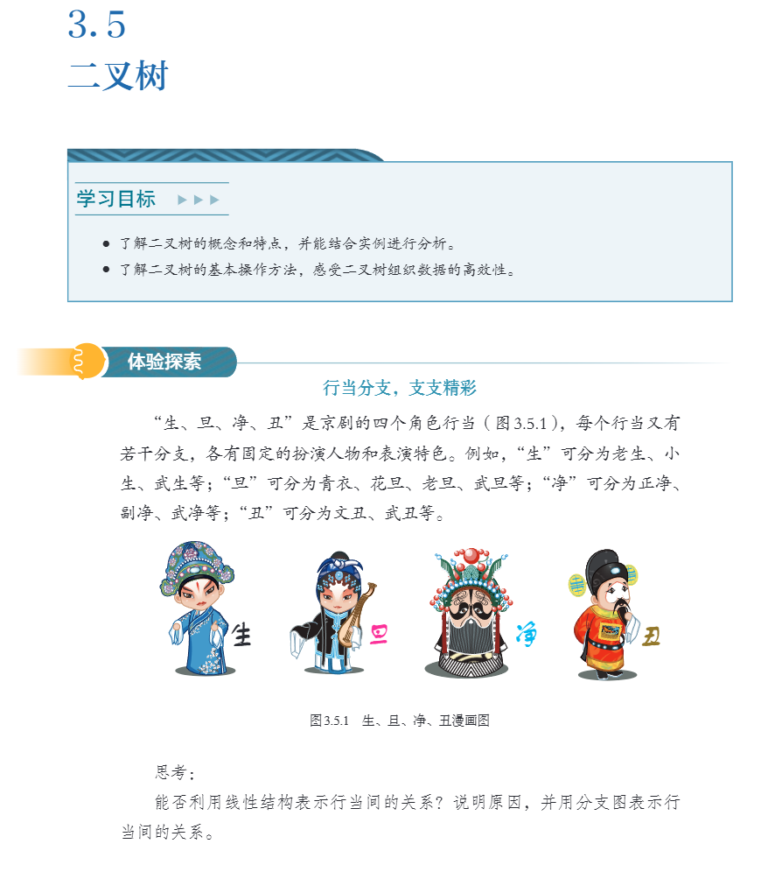
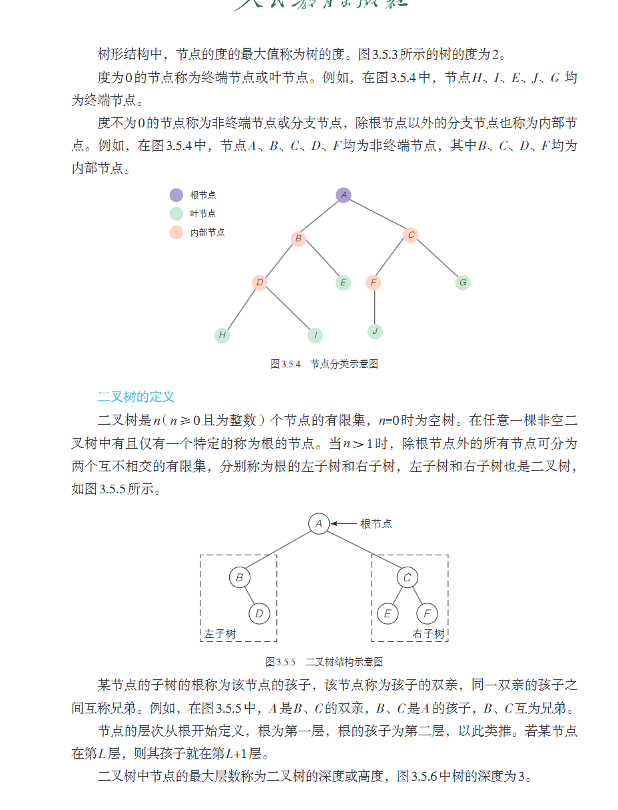
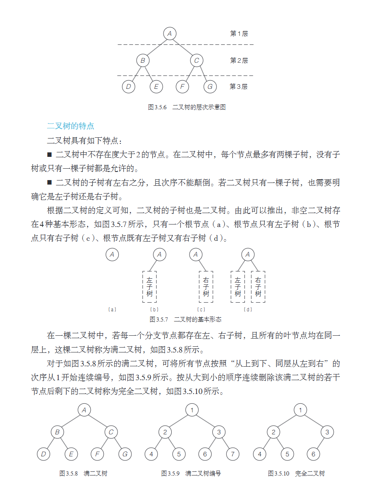
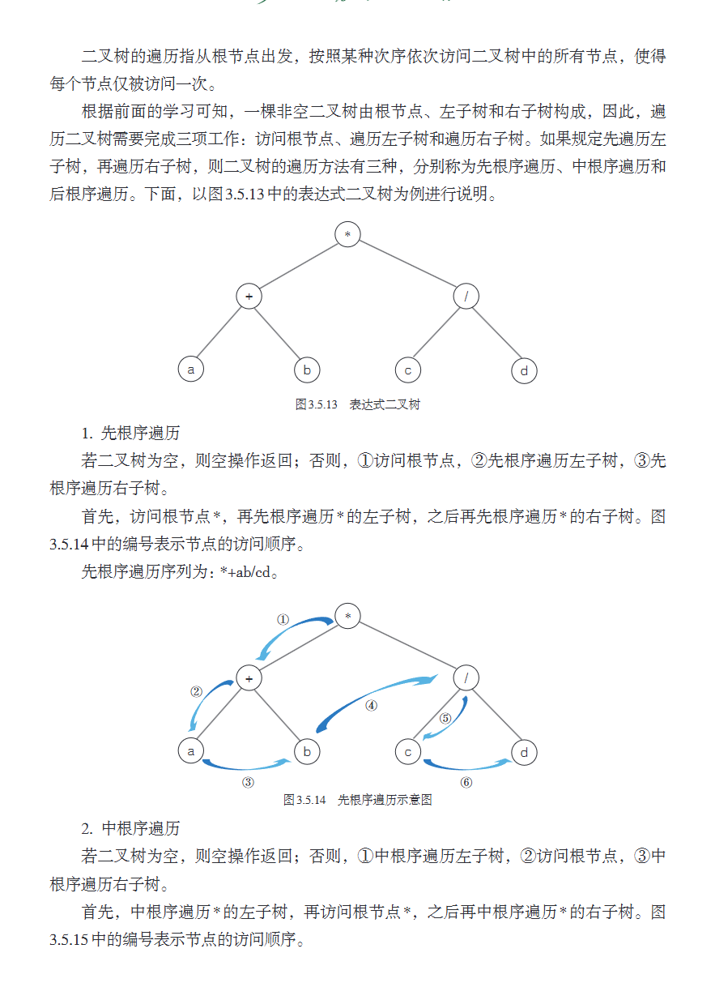

从京剧行当的分支结构，到计算机科学中最优雅的数据组织方式——
本节带你理解二叉树的概念，并掌握三种经典的遍历算法。
京剧行当分支 · 数的分类 · 树形结构的引入
节点、度、层次 · 双亲/孩子/兄弟 · 深度与高度
四种基本形态 · 满二叉树 · 完全二叉树
构造、查找、删除、遍历 · 动物园馆舍问题引入
先根序 · 中根序 · 后根序 · 表达式二叉树演示
对比口诀 · 应用场景 · 课后练习

树中的每个数据元素，包含数据值和指向子树的分支。
节点拥有的子树个数。度为0的节点称为叶节点（终端节点）。
树中最顶层、唯一没有双亲的节点。一棵非空树有且仅有一个根。
树中节点的最大层次数。根为第1层，孩子逐层+1。

二叉树是 n（n≥0）个节点的有限集。
n=0 时为空树；n>0 时：
① 有且仅有一个根节点
② 其余节点分为两个互不相交的有限集，分别称为左子树和右子树
1. 每个节点最多两棵子树（度 ≤ 2）
2. 子树有左右之分，次序不可颠倒
即使只有一棵子树，也须明确是左还是右。

(a) 仅根节点
(b) 仅左子树
(c) 仅右子树
满二叉树
每层节点全满，叶节点在同一层
完全二叉树
删除末尾若干节点后得到
遍历指从根节点出发，按某种次序依次访问二叉树中的所有节点，且每个节点仅被访问一次。
完成遍历的三项工作：
① 访问根节点 ② 遍历左子树 ③ 遍历右子树
如果规定"先左后右"，则根节点的访问时机决定了三种遍历方式：
先根序（根→左→右） ·
中根序（左→根→右） ·
后根序（左→右→根）

| 遍历方式 | 次序 | 序列结果 | 表达式类型 | 应用场景 |
|---|---|---|---|---|
| 先根序 | 根→左→右 | * + a b / c d | 前缀表达式（波兰式） | 复制树结构、表达式解析 |
| 中根序 | 左→根→右 | a + b * c / d | 中缀表达式 | 日常书写的算式！ |
| 后根序 | 左→右→根 | a b + c d / * | 后缀表达式（逆波兰式） | 计算机表达式求值 |
遇根就访问
左完再取根
左右走完再拿根